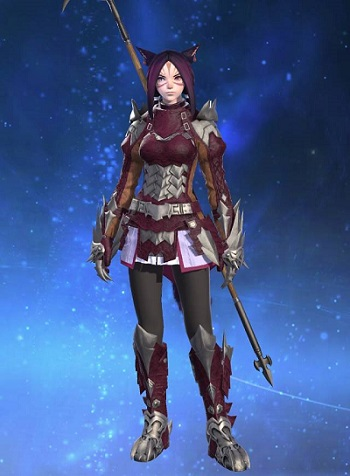

Description

Keena Gott est une Miqo'te de la Tribu du Soleil et pratique l'art de la lance, elle est plus qu'une maitre d'hast, mais une chevalière Dragon qui est un art originaire de la cité-État d'Ishgard.
Elle est née lors du 5e soleil de la 3e lune astrale, soit le 5e jour du 5e mois et a pour divinité protectrice Halone, la conquérante dont le signe est une lance.
Originaire de Gridania, elle est Adjudante de l'Ordre des deux vipères, la grande compagnie locale, mais fait partie de la Compagnie Libre "Fairy Shadow" affiliée au Maelström, la grande compagnie de Limsa Lominsa.